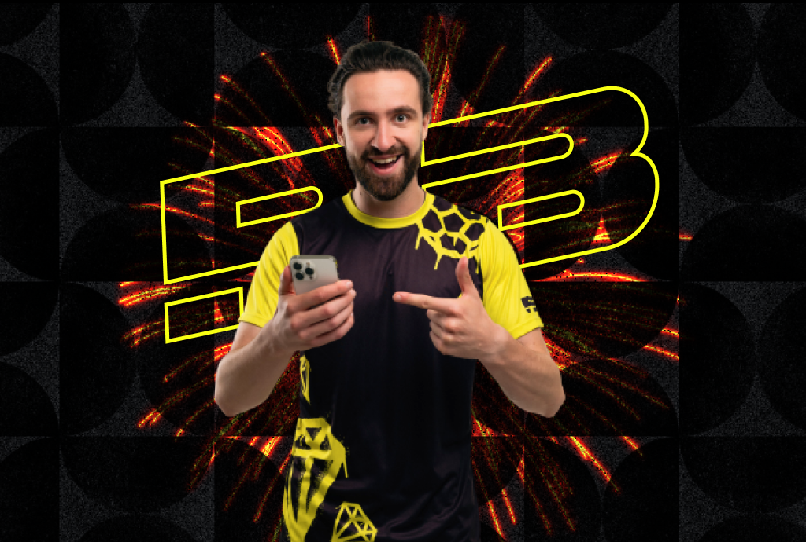
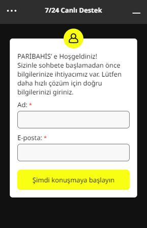
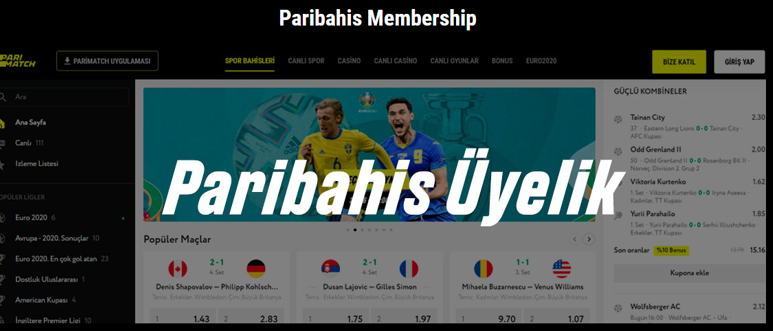
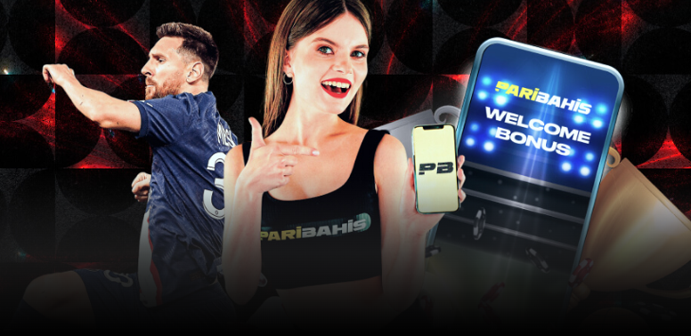

Paribahis: Bahis ve Casino için Güvenilir Ortağınız
5000 TL HOŞGELDİN BONUSU + 150 FREESPİN!
Bonus alParibahis - Canlı Bahis ve Casino
Paribahis, Türkiye pazarında nispeten yeni olmasına rağmen on yıllardır küresel bahis endüstrisinde yer almaktadır. 1996 yılında kurulan şirketimiz, Avrupa çapında olağanüstü bahis hizmetleri sunmaktadır. Misyonumuzun bir parçası olarak, Türkiye pazarına birinci sınıf, en profesyonel ve en yeni bahis deneyimlerini sunma felsefesini sunmaktan gurur duyuyoruz.
Paribahis ile sadece bir bahis sitesinden daha fazlasını elde edersiniz. Sağlam bir bonus politikası, çok çeşitli iletişim seçenekleri ve benzersiz hizmet sunan kapsamlı bir platform sunuyoruz. Bugün, Türkiye'nin en iyi bahis şirketlerinden biri olarak kabul ediliyoruz çünkü güven ve güvenilirlik üzerine inşa ettik.
Bahis yolculuğunuzu yeniden tanımlamak için burada bulunduğumuz Paribahis Türkiye'ye hoş geldiniz. Aşağıda Paribahis'in sunduğu başlıca özellikleri bulacaksınız
| Ana Özellikler | |
|---|---|
| İnternet Sitesi | www.paribahis.com |
| Kuruluş Yılı | 2018 |
| Lisans | Curaçao eGaming Lisansı (#8048/JAZ) |
| Dil Seçenekleri | Türkçe, İngilizce |
| Hoşgeldin Bonusu: | 5000 TL |
| Ücretsiz döndürmeler: | 150 FS |
| Canlı Destek | 7/24 Türkçe Canlı Destek |
| Bahis Seçenekleri | Spor Bahisleri, Canlı Bahis, Casino, Canlı Casino |
| Türkçe Destek: | support@paribahis.com |
| Ikramiye | Hoşgeldin Bonusu, Kayıp Bonusu, Para Yatırma Bonusu |
| Para Yatırma Yöntemleri | QR Kodu, Papara, QR Kodu, EcoPayz, Banka Havalesi, Bitcoin, AstroPay, EFT, Kredi Kartı |
| Para Çekme Yöntemleri | QR Kodu, Papara, QR Kodu, EcoPayz, Banka Havalesi, Bitcoin, AstroPay, EFT, Kredi Kartı |
Profesyonel:
- Çeşitli sporlarda bir dizi bahis seçeneği sunar.
- Canlı bahis ve canlı casino oyunları için fırsat sağlar.
- Kullanıcı dostu bir arayüze ve mobil uyumluluğa sahiptir.
- Yüksek oranlar ve çeşitli bonuslar sunar.
- Güçlü müşteri hizmetleri ve 7/24 canlı destek sağlar.
Eksi -lerini:
- Bazı ülkelerde erişim kısıtlamaları olabilir.
- Bazı bahis seçenekleri ve oyunlar belirli bölgelerde sınırlı olabilir.
Paribahis Bahisleri
Paribahis çok çeşitli spor dallarında bahis seçenekleri sunmaktadır. Futboldan basketbola, tenisten beyzbola kadar birçok spor dalına bahis oynayabilirsiniz. Canlı bahis özelliği ile maçlar sırasında bahis yapma şansına da sahip olursunuz.
| Paribahis Bahisleri | |
|---|---|
| Oyun Çeşitliliği | Çok çeşitli benzersiz bahis seçenekleri |
| Ikramiye | Bahis oyunları için üst düzey bonus planlaması |
| Bahis Seçenekleri | Yüzlerce farklı seçenek |
| Düşük Miktarlı Bahisler | Düşük miktarlı yatırımlara izin verir |
| Kazanma Potansiyeli | Önemli kazançlar için yüksek potansiyel |
Nasıl Bahis Yapılır:
- Paribahis hesabınıza giriş yapın.
- Bahis yapmak istediğiniz sporu ve maçı seçin.
- Bahis türünü ve bahis miktarını belirleyin.
- Bahislerinizi onaylayın ve beklemeye başlayın.
Canlı Bahis Nasıl Oynanır:
- Paribahis hesabınıza giriş yapın.
- Canlı Bahis bölümüne gidin.
- Canlı oynanan maçı ve bahis türünü seçin.
Paribahis Casino
Paribahis Casino, ekranlarınıza çok çeşitli casino oyunları getiriyor. Blackjack ve Rulet gibi normal masa oyunlarından modern slot oyunlarına kadar sevdiğiniz bir şeyi bulabilirsiniz.
Türkiye pazarındaki en çeşitli ve kaliteli casinolardan biri olan Paribahis Casino ve Live Casino öne çıkıyor. Paribahis, aynı oyunları tekrar tekrar tekrarlayan diğer platformların aksine, çeşitli tercihlere hitap eden zengin bir dizi benzersiz oyun sunar.
Eşsiz Oyun Çeşitliliği:
Paribahis Casino'da yüzlerce farklı bahis seçeneği arasından seçim yapabilirsiniz. Farklı oyun deneyimleri, her oyuncu için ilgi çekici bir oyun deneyimi sağlar ve kazanç oranlarını doğrudan etkiler. Ne tercih ederseniz edin, canlı oyunlar, modern slotlar veya geleneksel masa oyunları olsun, casinomuzdaki herkes için bir şeyler var.
Üst Düzey Bonus Planlama:
Paribahis, casino ve canlı casino bölümlerine özel olarak uyarlanmış cazip bonuslar sunar. Bu bonuslar, bir oyuncunun genel oyun deneyimini geliştirir, bu da heyecanı ve potansiyel kazançları arttırır.
| Paribahis Casino | |
|---|---|
| Oyun Çeşitliliği | Çok çeşitli benzersiz oyunlar |
| Ikramiye | Casino oyunları için üst düzey bonus planlaması |
| Bahis Seçenekleri | Yüzlerce farklı seçenek |
| Düşük Miktarlı Bahisler | Düşük miktarlı yatırımlara izin verir |
| Düşük Miktarlı Bahisler | Düşük miktarlı yatırımlara izin verir |
Canlı Casino ve Slot Casino Oyunları
Paribahis Live Casino ve slot oyunlarında oyuncuları hızlı tempolu ve heyecan verici bir bahis ortamı bekliyor. Buna ek olarak, Paribahis oyuncuların bu oyunlara nispeten düşük miktarlarda yatırım yapmalarını sağlar ve bu da onları daha geniş bir oyuncu yelpazesine erişilebilir kılar. Anında sonuç alabilir ve kazançlarını hemen yeniden yatırabilirler.
Bonuslar ve İki Katına Çıkma Oranları:
Ek olarak, oyuncular kazançlarını bonuslarla artırabilir ve bu da kazançlarının oranını iki katına çıkarabilir. Bu özelliğin eklenmesi ödül potansiyelini artırır ve bir heyecan katmanı ekler.
Düşük Minimum Yatırım:
Paribahis, oyuncuların yüksek minimum yatırım gerektiren diğer bahis platformlarının aksine, düşük miktarlarda casino veya slot oyunlarına yatırım yapmalarını sağlar. Doğru stratejiyle, bu özellik oyuncuların küçük yatırımları önemli kazançlara dönüştürmelerini sağlar.
Casino Oyunları Nasıl Oynanır:
- Paribahis hesabınıza giriş yapın.
- Casino bölümüne gidin.
- Oynamak istediğiniz oyunu seçin.
- Kuralları anlayın ve oynamaya başlayın.
Canlı Casino Oyunları Nasıl Oynanır:
- Paribahis hesabınıza giriş yapın.
- Canlı Casino bölümüne gidin.
- Oynamak istediğiniz canlı oyunu seçin.
- Kuralları anlayın ve oynamaya başlayın.
Müşteri Desteği
Canlı destek, Paribahis'in platformunun önemli bir yönüdür, çünkü kullanıcılarına hızlı ve profesyonel müşteri desteği sağlamanın ne kadar önemli olduğunun farkındadırlar. Bazen, sorunlar herhangi bir bahis sitesindeki üye deneyimini etkileyebilir. Paribahis bu sorunların derhal ve etkili bir şekilde ele alınmasını sağlamak için adımlar atmıştır.
Paribahis sunduğu çeşitli destek seçeneklerine bakın:
| Destek Seçenekleri | Tarif |
| Canlı Sohbet Desteği | Paribahis'in temel bir özelliği olan canlı destek ekibi, yardımın sadece bir veya iki tık uzakta olmasını sağlayarak 7/24 hizmetinizdedir. Ekip, gerçek zamanlı yardım sağlayan Türkçe konuşan profesyonellerden oluşmaktadır. |
| E-posta Desteği | Kullanıcılar sorgularını e-posta yoluyla gönderebilirler. Bu yöntem canlı sohbet kadar anlık olmasa da, genellikle izlenir ve makul bir zaman dilimi içinde bir yanıt bekleyebilirsiniz. |
| SSS Bölümü | Kullanıcıların sık karşılaşılan sorunlara yanıt bulabileceği bir kendi kendine yardım bölümü. |
| Sosyal Medya | Facebook, Twitter ve Instagram gibi platformlar destek için kullanılabilir |
Sorununuzun doğası ne olursa olsun, Paribahis günün her saatinde etkili destek sağlamayı ve oyun deneyiminizin mümkün olduğunca sorunsuz ve keyifli olmasını sağlamayı amaçlamaktadır.
Giriş Adresi
Yatırımcılar ülkemizdeki mevcut bahis politikaları nedeniyle genellikle paribahis giriş adreslerini ararlar. Büyük ölçekli sanal bahis şirketleri için yasal bir düzenleme bulunmadığından, ülkemiz çoğu zaman erişimlerini engellemektedir. Büyük ölçekli, güvenilir ve üst düzey bahis şirketi Paribahis, büyüklüğü, güvenilirliği ve yüksek seviyesi nedeniyle sık sık kendisini bu konunun ön saflarında bulur.
Paribahis, Paribahis giriş adresini çevreleyen karmaşıklıklardan bağımsız olarak oyuncularına sürekli erişim sağlamayı taahhüt eder. Bu bağlamda, Paribahis sağlam bir politika sürdürmekte ve sürekli erişim sağlamak için sitemizle yakın işbirliği içinde çalışmaktadır.
Paribahis, mevcut bir giriş adresini kapattıktan sonra yeni bir şifreyi hızlı bir şekilde etkinleştirir ve aşağıdaki gibi çeşitli kanallardan yayar:
- SMS
- E-posta
- Sosyal medya
İlk olarak, kullanıcıların Paribahis giriş adresini aramak zorunda kalmamaları ve sitemizde mümkün olan en kısa sürede bulabilmeleri için yeni adres sitemize gönderilir. Şirketin kullanıcı erişimini sürdürmeye olan bağlılığı, bahis endüstrisinde sorunsuz bir deneyim sunma taahhüdünün altını çiziyor.
Adresi Bulma
Paribahis'in şu anki adresinin nerede olduğunu bildiğinizde kolayca bulabilirsiniz. Bazı üyeler onu bulmak için arama motorlarını ve sosyal medyayı kullansa da, bu yöntem daha yüksek riskler taşır. Riskleri azaltmak için, güncellenmiş adresleri doğrudan Paribahis'ten almanız önerilir.
Paribahis'in mevcut adresi genellikle önceki giriş adresi kapatıldıktan sonra değiştirilir. Adresin gerçekliğini doğrulamak için, kullanıcılar yapısını ve önceki adrese benzerliğini incelemelidir. Kullanıcılar, Paribahis145.com ve Paribahis146.com arasındaki benzerlikleri inceleyerek güvenilir bir giriş seçeneği sağlayabilir. Örneğin, geçerli adres Paribahis145.com ise, bir sonraki adres Paribahis146.com veya Paribahis147.com olabilir
Giriş Detayları
Yatırımcıların emrinde çeşitli Paribahis giriş seçenekleri vardır. Siteye erişim sağlamak için birincil yöntemler şunlardır:
- Site tarafından e-posta, SMS, sosyal medya kanalları veya web sitemiz aracılığıyla sağlanan giriş adreslerini kullanarak.
- Siteye mobil uygulaması üzerinden erişim.
- Sitenin giriş adresini kullanarak bir mobil tarayıcı üzerinden giriş yapmak.
- Mobil uygulamadan yeni giriş adresi hakkında bilgi edinme.
Paribahis erişim yöntemlerinin bir parçası olarak, üyeler yukarıda belirtilen yöntemler arasından serbestçe seçim yapabilirler.
Paribahis giriş seçeneklerini seçerken göz önünde bulundurulması gereken en önemli husus, giriş adresinin güvenliği ve güvenilirliğidir. Paribahis yeni bir site olmasına rağmen, kötü niyetli aktörler Türkiye pazarında kendisine bağlı sahte adreslerle üyelerini aldattı. Üyelerin, popülaritesi ve tanınırlığı göz önüne alındığında ekstra dikkatli olmaları gerekir. Paribahis giriş seçeneklerini keşfederken böyle bir sahtekarlıkla karşılaşma olasılığı yüksektir. Bunu önlemek için yeni adresler hakkında doğrudan web sitemizden bilgi edinmeniz önerilir.
VIP Üyelik
Paribahis'teki VIP üyelikleri, potansiyel, yeni ve mevcut üyeler tarafından çok aranmaktadır çünkü ek avantajlar sunmaktadırlar. VIP üyeler, adlarından da anlaşılacağı gibi, artan bahis oranlarından, bonuslardan, fırsatlardan ve talep edilen tercihlerden yararlanırlar. Bu nedenle, birçok üyenin veya yatırımcının sahip olmak istediği bir üyelik türüdür.
Paribahis VIP üyesi olmak sadece talep etmekten ibaret değildir, aynı zamanda üyenin sitedeki faaliyetiyle daha yakından bağlantılıdır. VIP üyeliğine hak kazanmak için birkaç faktörü göz önünde bulundurmanız gerekir:
Tutarlı bir etkinlik sürdürün: Siteye düzenli katılım çok önemlidir.
Önemli yatırımlar yapın: Sık ve önemli mevduatlar şansınızı artırır.
Günlük bahis yapın: Düzenli bahis aktivitesi önemli bir husustur.
Üyeliğin doğrulanması: Üyeliğinizin doğrulandığından emin olun.
Bu detaylara bağlı kalmanız Paribahis tarafından kısa sürede VIP statüsüne davet edilme şansınızı artırır.
Üyelik İşlemleri
Paribahis üyelik süreci, mükemmel avantaj ve avantajlara sahip dünyanın önde gelen bahis sitelerinden birine erişmenizi sağlar. Üye olmanın bir parçası olarak, site tarafından talep edildiği şekilde doğru bilgi sağlamalısınız. Yanlış bilgi vermeniz, üyeliğinizin iptal edilmesine neden olabilir.
İşte sorunsuz bir Paribahis üyelik süreci için adım adım kılavuz:
- Paribahis sitesini ziyaret edin ve sağ üst menüdeki sarı renkli "BİZE KATILIN" butonuna tıklayın.
- E-posta, telefon numarası ve şifre isteyen üyelik öncesi formu doldurun. Bu ayrıntılar, gelecekteki hesap aktivasyonları için çok önemlidir.
- İlk aşamayı tamamladıktan sonra, siteye erişebilir ancak hesabınız etkinleştirilene kadar harekete geçemezsiniz.
- "Hesabım" sayfasına gidin ve ad, soyad, doğum tarihi, posta kodu, adres, ülke ve şehir dahil olmak üzere kişisel bilgilerinizi "Profil" bölümüne girin. Doğum tarihinizin doğru olduğundan emin olun.
- Yan sekmedeki "Hesap Doğrulama" adımını tamamlayın ve bahis yatırım işlemlerinize hızlı bir şekilde başlayın.
Bu adımları takip ederek Paribahis üyelik sürecinizi tamamlamış olursunuz.
| Adım | Eylem |
| 1 | Paribahis sitesinde "BİZE KATIL"a tıklayın |
| 2 | Üyelik öncesi formu doldurun |
| 3 | Siteye erişin ve hesap aktivasyonunu bekleyin |
| 4 | "Profil" bölümüne kişisel bilgilerinizi girin |
| 5 | "Hesap Doğrulama" adımını tamamlayın |
Mobil Erişim
Mobil bahis erişimi ile Paribahis en son teknolojik gelişmelere olan bağlılığını göstermektedir. Türkiye pazarı, mobil erişimi olan kaliteli hizmet sağlayıcılar arayan yatırımcılar için büyük önem taşıyor. Paribahis, üyelerine mobil erişim sağlayarak iki farklı yöntemle saniyeler içinde site erişimini kolaylaştırır: mobil cihazlar için optimize edilmiş bir web sitesi ve özel mobil uygulamalar.
Paribahis platformunun benzersiz bir özelliği, Android ve iOS ile Windows için mobil uygulamalar sunmasıdır. Bir uygulama, hem telefon hem de bilgisayar kullanıcılarına siteye erişme esnekliği sağlar. Cihazınızdaki mobil içeriğe erişmeden önce işletim sisteminiz için doğru mobil uygulamayı indirip yüklemeniz gerekir. Bu adımları takiben, kullanıcılar bir mobil uygulama aracılığıyla sisteme erişmekte sorun yaşamayacak ve sorunsuz girişler sağlayacaktır.
Paribahis Uygulamasını İndirme ve Yükleme Adımları:
Android:
- Android cihazınızdan Paribahis web sitesini ziyaret edin.
- Android uygulama indirme bağlantısını bulun ve tıklayın.
- İndirildikten sonra, cihaz ayarlarınıza gidin ve bilinmeyen kaynaklardan yüklemelere izin verin.
- İndirilen dosyayı bulun ve uygulamayı yükleyin.
İOS
İOS cihazınızdaki App Store'a ulaşın.
Paribahis uygulamasını arayın.
Uygulamayı iOS cihazınıza indirmek ve yüklemek için 'Al' seçeneğine tıklayın.
Windows:
- Windows cihazınızdan Paribahis web sitesini ziyaret edin.
- Windows uygulama indirme bağlantısını bulun ve tıklayın.
- İndirildikten sonra, uygulamayı yüklemek için yükleyiciyi çalıştırın.
| Cihaz Türü | İşletim Sistemi | Desteklenen Cihazlar | Uygulama İndirme Kaynağı |
| Akıllı Telefon / Tablet | Android | Android 4.0 veya üstünü çalıştıran tüm Android cihazlar | Paribahis web sitesi |
| Akıllı Telefon / Tablet | Ios | iOS 10.0 veya üstünü çalıştıran iPhone, iPad ve iPod touch | Uygulama Mağazası |
| Bilgisayar | Windows | Windows 7, 8, 10 ve daha yeni sürümler | Paribahis web sitesi |
Üyelik İptali
Birçok üye, Paribahis'e olan üyeliklerini nasıl sonlandıracaklarını anlamakta güçlük çekiyor. Üyeliğin sonlandırılması için iki temel senaryo vardır: otomatik devre dışı bırakma ve gönüllü iptal. Otomatik devre dışı bırakma, hesapta gerçekçi olmayan bilgiler varsa veya benzer sorunlar varsa oluşabilir. Üyeler canlı desteğe başvurabilir, hesaplarını doğrulayabilir ve böyle bir durumda yardım alabilirler.
Gönüllü üyelik iptali, Paribahis'le olan ilişkilerini sonlandırmak isteyen üyeler için başka bir seçenektir. Tüm üyeler bu doğal olaya katılabilir. Üyeler bunu genellikle "Hesap Ayarları" bölümünden yürütebilir. Ek olarak, sitenin canlı destek ekibiyle iletişime geçmek veya support@paribahis.com e-posta göndermek, üyelik sonlandırma desteğini kolaylaştırabilir.
Paribahis Üyeliğini İptal Etme Adımları:
- Paribahis hesabınıza giriş yapın.
- "Hesap Ayarları" bölümüne gidin.
- Üyeliğinizi iptal etme seçeneğini bulun ve talimatları izleyin.
- İptal seçeneğini bulamazsanız, üyeliğinizi iptal etmek istediğinizi belirten canlı destek ekibiyle iletişime geçin veya support@paribahis.com e-posta gönderin. Doğrulama amacıyla ilgili hesap ayrıntılarını sağladığınızdan emin olun.
- Üyeliğinizin iptali ile ilgili olarak Paribahis'ten onay bekleyiniz.
Bonus Teklifleri
Paribahis'in bonus teklifleri, üyelik süreci, bahis oranları, canlı destek ve lisanslama kadar dikkat çekiyor. Şirket, her yatırımcının bonus avantajlarına erişebilmesini sağlamak için kapsamlı bir bonus politikası izlemektedir.
Bu nedenle, para yatırma bonusları, bahis depozitoları, turnuva bonusları ve kayıp bonusları dahil olmak üzere çok çeşitli bonuslar sunarlar. Burada, üyeler için önemli bir gelir kaynağı olarak kabul edilebileceğini gösteren çok çeşitli bonuslar mevcuttur.
Aşağıda Paribahis üyelerinin yararlanabileceği bonusların bir listesi bulunmaktadır:
| Bonus Türü | Şey | Örnek |
| Haftalık Kayıp Bonusu | Spor bahisleri kayıplarında% 10 bonus. | 500 TL kaybederseniz 50 TL bonus kazanırsınız. |
| Pragmatik Oyun Turnuvası | Toplam 2.500.000 € 'luk büyük ödülün bir kısmını kazanma şansı. | Sıralamanıza bağlı olarak, 2.500.000 € 'luk bir pay kazanabilirsiniz. |
| Euro Kick-Off Turnuvası | Potansiyel 100.000 € ödüllü etkinlik bonusu. | Kazanırsanız, toplam 100.000 € 'luk ödülün bir kısmını alabilirsiniz. |
| Canlı Casino Turnuvası | Canlı Casino kategorisi için 3.000.000 € ödül havuzuna sahip özel turnuva. | En iyi performans gösterenler 3.000.000 € 'luk bir pay kazanabilirler. |
| İlk Para Yatırma Bonusu | İlk üç para yatırma işleminde 5000 TL'ye kadar %150 bonus, ayrıca yeni üyeler için 150 bedava dönüş. | 1000 TL yatırırsanız 1500 TL bonus ve 150 bedava spin kazanırsınız. |
| Kripto Para Yatırma Bonusu | % 30 bonus artı kripto para birimi para yatırma işlemlerinde 30 ekstra ücretsiz dönüş. | Bitcoin'e 100 TL yatırırsanız 30 TL bonus ve 30 bedava spin kazanırsınız. |
| Para Yatırma Bonusu | Her para yatırma işleminde% 15 bonus artı 15 ücretsiz dönüş. | 500 TL yatırırsanız 75 TL bonus ve 15 bedava spin kazanırsınız. |
| Bahis Kaybı İade Bonusu | Bahis kayıplarında% 25 getiri bonusu. | 400 TL kaybederseniz 100 TL bonus kazanırsınız. |
Lütfen bu örneklerin yaklaşık olduğunu ve bonus miktarlarının belirli şartlar ve koşullara bağlı olarak değişebileceğini unutmayın.
Paribahis Bonuslarını Talep Etme Adımları:
- Paribahis hesabınıza giriş yapın.
- Bonuslar" veya "Promosyonlar" bölümüne gidin.
- Uygun olduğunuz ve talep etmek istediğiniz bonusu seçin.
- Bonusunuzu almak için ekrandaki talimatları izleyin.
- Talep edildikten sonra, bonus hesabınıza yatırılacaktır.
- Bonusunuzu, belirli bonus teklifinin şart ve koşullarına göre kullanın.
Not: Her bonusun, bonusu talep etmeden önce okunması ve anlaşılması gereken belirli şart ve koşulları vardır.
Hoşgeldin Bonusu
Paribahis yeni üyelere cazip bir hoşgeldin bonusu, siteye katıldıkları andan itibaren kazanmaya başlama fırsatı sunuyor. Paribahis'in hoşgeldin bonusu, yeni kayıt yaptıran üyeleri etkileyen en büyük faktörler arasındadır. 5000 TL'ye kadar %150 bonus ve ekstra 150 free spin gibi cömert teklifi ile Paribahis hoşgeldin bonusu özellikle yeni yatırımcıları cezbetmektedir.
İşte hoşgeldin bonusu nasıl yapılandırılır:
| Para Yatırma Numarası | Bonus Oranı | Maksimum Bonus Tutarı | Minimum Para Yatırma Miktarı |
| İlk Para Yatırma | 125% | 2000 TL | 50 TL |
| İkinci Para Yatırma | 100% | 1500 TL | 50 TL |
| Üçüncü Para Yatırma | 150% | 1500 TL | 50 TL |
Sadece yeni üyelerin ilk üç para yatırma işlemi için geçerlidir. Paribahis 5000 TL'ye kadar bonus para alabileceğiniz bir hoşgeldin bonusu kampanyasına sahiptir. Bonus tutarını almak için bu süre zarfında bahis gereksinimlerini karşılamanız gerekir. Bonus tutarı hesabınızda en fazla bir ay kalabilir. Bu süre zarfında bonus tutarı geçerlidir. 50 TL ile hoşgeldin bonusu kampanyasına katılabilirsiniz.
Para Transferleri
Paribahis para transferlerini yönetme verimliliği birçok yatırımcı için büyük bir endişe kaynağıdır. Gerçekten de, bir bahis sitesindeki ödeme seçeneklerinin kullanılabilirliği ve erişilebilirliği, bir yatırımcının katılma, para yatırma ve kazanma yeteneğini doğrudan etkiler.
Türk yatırımcıların ihtiyaçlarını karşılamak için özel olarak tasarlanan Paribahis, uygun olduğunda bakiyelerini doldurmalarını sağlayan çeşitli para transferi seçenekleri sunmaktadır. Paribahis, kullanıcılara hızlı bakiye yükleme ve çekme hizmetleri sunarak rahatsızlıkları ortadan kaldırır.
Paribahis üyelerine kripto para birimlerinden sanal kartlara kadar çeşitli para yatırma yöntemleri sunmakta dır. Sık tercih edilen seçenekler şunlardır:
- Ethereum, Litecoin, Ripple ve Bitcoin dahil olmak üzere kripto para birimi mevduatları
- Sanal kartlar, cüzdanlar ve ön ödemeli kartlar
- Kredi kartları ile sanal POS üzerinden doğrudan bakiye yükleme
- Papara kullanarak para transferleri
- QR ve CepBank gibi hızlı ve kolay transferler
- Paribahis hesaplarına EFT veya banka havaleleri
Bu yöntemler, Paribahis'i çok çeşitli para yatırma tercihlerine hitap eden profesyonel bir yatırım sağlayıcısı haline getirir.
Her bir ödeme yöntemi için minimum ve maksimum depozito tutarlarını Türk Lirası (TL) cinsinden gösteren bir tablo:
| Ödeme Yöntemi | Minimum Para Yatırma Miktarı (TL) | Maksimum Para Yatırma Miktarı (TL) |
| Kripto para birimleri | 50 | 500,000 |
| Papara 1 | 2,500 | 50,000 |
| Pep | 50 | 500 |
| Arjantin | 50 | 20,000 |
| Göstermek | 50 | 1,000 |
| Havale | 100 | 100,000 |
| Maxi Bankası | 100 | 50,000 |
| CepBank | 50 | 4,000 |
| QR Kodu | 50 | 4,000 |
| Papara Hızlı | 100 | 5,000 |
| Ödeme Düzeltme | 50 | 50,000 |
| Jeton | 50 | 50,000 |
| Papara 2 | 50 | 100,000 |
Para Çekme Detayları
Paribahis kullanıcılarına güvenli, kolay ve hızlı bir para çekme işlemi sağlar. İşte Paribahis'te paranızı nasıl çekeceğinize dair adım adım bir süreç.
- Paribahis hesabınıza giriş yapın.
- "Hesabım" bölümüne gidin.
- 'Para Çek' seçeneğine tıklayın.
- Tercih ettiğiniz para çekme yöntemini seçin.
- Çekmek istediğiniz tutarı girin.
- Para çekme talebinizi tamamlamak için aşağıdaki adımları izleyin.
Para çekme talebinizi işleme koymak için gereken sürenin, seçtiğiniz para çekme yöntemine bağlı olarak değişebileceğini lütfen unutmayın.
Paribahis'in sunduğu çeşitli ödeme yöntemleri için minimum ve maksimum para çekme tutarlarını (Türk Lirası - TL cinsinden) özetleyen bir tablo:
| Ödeme Yöntemi | Minimum Para Çekme (TL) | Maksimum Para Çekme (TL) |
| Banka Havalesi | Daha sonra belirlenecek | 50.000 (24 saat), 1.000.000 (30 gün) |
| Kredi kartı | Bu Yöntemde Para Çekme İşlemi Yapılamamaktadır | 50.000 (24 saat), 1.000.000 (30 gün) |
| Sanal Kart | Daha sonra belirlenecek | 50.000 (24 saat), 1.000.000 (30 gün) |
| Hızlı Ödeme Sistemleri | 25 - 100 | 50.000 (24 saat), 1.000.000 (30 gün) |
| QR Ödeme Sistemleri | 50 | 50.000 (24 saat), 1.000.000 (30 gün) |
| Kripto para birimi | 50 - 200 | Daha sonra belirlenecek |
Türk Lirası (TRY) para yatırma ve çekme işlemleri için kabul edilen para birimidir. Paribahis, kullanıcıların işlem yapmasını kolaylaştıran geniş ödeme seçenekleri yelpazesiyle gurur duymaktadır.
Şikayetlere Genel Bakış
Paribahis'le ilgili şikayetlerle ilgili olarak, birkaç yönü göz önünde bulundurmak önemlidir. İşte önemli noktaları özetleyen bir liste:
Şikayetlerin Niteliği: İnceleme sonucunda, Paribahis'e karşı ortaya atılan ve güvenilir hizmetlerini gösteren önemli veya tutarlı bir sorun olmadığı tespit edilmiştir.
Şikayet Sıklığı: Paribahis'e karşı şikayetlerin sıklığı oldukça düşüktür ve bu da yüksek müşteri memnuniyetini düşündürmektedir.
Şikayetlerin Genel Eğilimi: Tekrarlanan şikayetlerden ziyade, genel eğilim şirket için yüksek miktarda olumlu geri bildirim ve övgü olduğunu gösterir.
Şirketin İtibarı: Katılmadan önce, birçok yatırımcı Paribahis'le ilgili kapsamlı araştırmalar yapar. Çoğu, şirkete iyi yansıyan minimum şikayetlerle güçlü bir itibar buluyor.
Olumlu Açıklamalar: İlginçtir ki, Paribahis'i araştıranların, gerçek şikayetlerden ziyade şirketin hizmetleri hakkında olumlu yorumlar ve övgüler alma olasılıkları daha yüksektir.
Özetle, Paribahis hakkında önemli şikayetlerle karşılaşma olasılığı son derece düşüktür ve şirketin hizmetleri hakkında övgüler ve olumlu geri bildirimler bulmak çok daha yaygındır.
Lisans Ayrıntıları
Paribahis'e olan güveninizi, lisans bilgilerini anlayarak artırabilirsiniz. Kaydolduğunuzda, yatırım yaptığınızda veya platformdaki yükü dengelediğinizde, herhangi bir sorunla karşılaşmayacağınızdan emin olabilirsiniz.
Şirketin operasyonlarının önemli bir yönü, Curacao hükümetinin yetkilendirdiği Antillephone N.V.'nin 8048 / JAZ ana lisansının bir parçası olan 8048 / JAZ2014-034 oyun lisans numarasıdır. Bu lisans, şirketin uluslararası iş yapmasına izin verir.
Ayrıca, Paribahis Rusya ve Ukrayna da dahil olmak üzere birçok Avrupa ve Asya ülkesinde yerel lisanslara sahiptir. Çeşitli düzenleyici kurumlar, çoklu lisansları nedeniyle şirketi denetleyerek güvenilirliğini ve uluslararası oyun standartlarına uygunluğunu sağlar.
Paribahis Sıkça Sorulan Sorular
1. Paribahis güvenilir midir?
Evet, Paribahis Türkiye'nin en güvenilir sanal bahis platformlarından biri olarak kabul edilir. Şirket yasal çerçeveler içinde faaliyet gösterir, yüksek standartları korur ve müşteri güvenini ön planda tutar. Güvenilirliklerinin temel göstergeleri arasında üyelerin belge talebi yoluyla doğrulanması, Curacao'dan uluslararası geçerliliği olan bir lisansa (JAZ / 8048) sahip olmaları, büyük ödeme şirketleriyle işbirlikleri, dünya çapında resmi sponsorluklar ve üst düzey bahis ve casino altyapı şirketleri ile ortaklıklar bulunmaktadır.
2. Paribahis Öder mi?
Evet, Paribahis ödemeler konusunda son derece gayretlidir. Ödemeleri erişilebilir kanallar aracılığıyla hızlı bir şekilde işlemeye çalışırlar. Para transferleri genellikle birkaç dakika içinde hesabınıza yansır ve bahis kazançlarınızı derhal nakde çevirmenizi sağlar. Müşterilerinin rahatlığı için çeşitli para transferi yöntemleri sunarlar.
3. Paribahis Para Çekme İşlemi Nasıl Yapılır?
Paribahis'ten istediğiniz zaman, günde bir kez, mevcut ödeme yöntemlerinden herhangi birini kullanarak para çekme talebinde bulunabilirsiniz. Seçtiğiniz ödeme yönteminin günlük para çekme limitlerini aklınızda bulundurun. Para çekme işlemleri, "Para Çekme" sayfasındaki para çekme kanalını seçerek ve tutarı girerek yapılabilir.
4. Paribahis'te Para Yatırma Nasıl Yapılır?
Paribahis hesabınıza hızlı para yatırma imkanı sunarak, fırsatları asla kaçırmamanızı sağlar. Menüdeki "Para Yatırma" sayfasına tıklayın, tercih ettiğiniz para yatırma yöntemini ve bonusu seçin, ardından para yatırma işleminizi tamamlamak için sayfadaki talimatları izleyin.
5. Paribahis Casino Bonusları Nelerdir?
Paribahis, gelişmiş bir bahis deneyimi için çeşitli Casino bonusları sunar. Bazı bonuslar, Casino bahislerinizde ve çeşitli oyun sağlayıcıları tarafından düzenlenen 30.000 ila 3.000.000 Euro arasında değişen bonus etkinliklerinizde %25 sınırsız geri ödeme seçeneğini içerir.